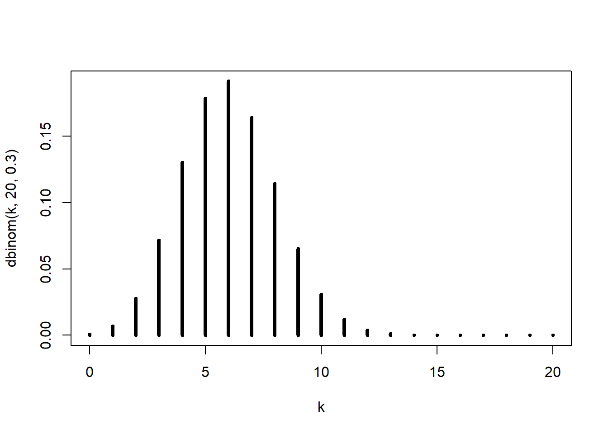
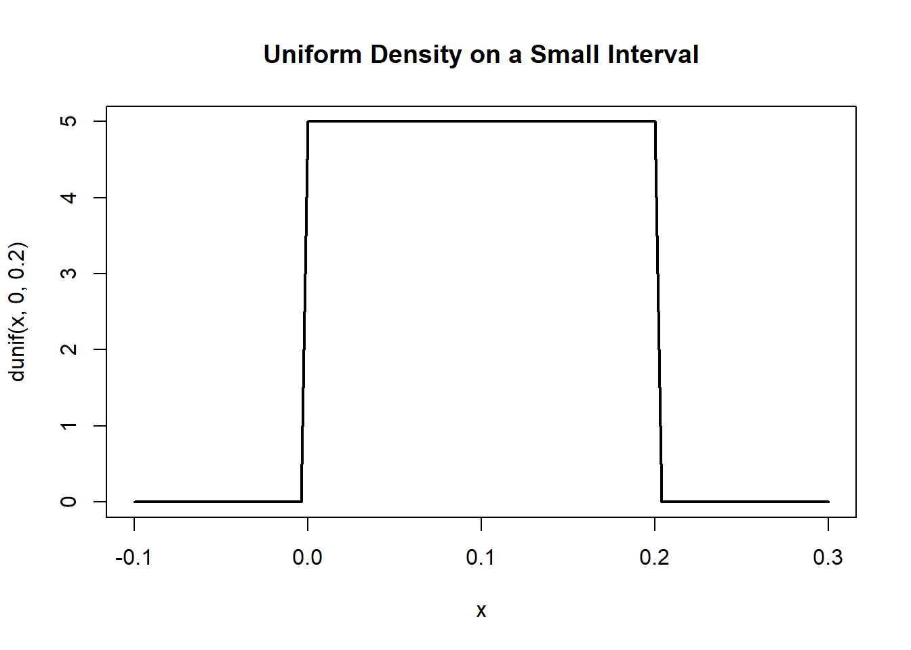
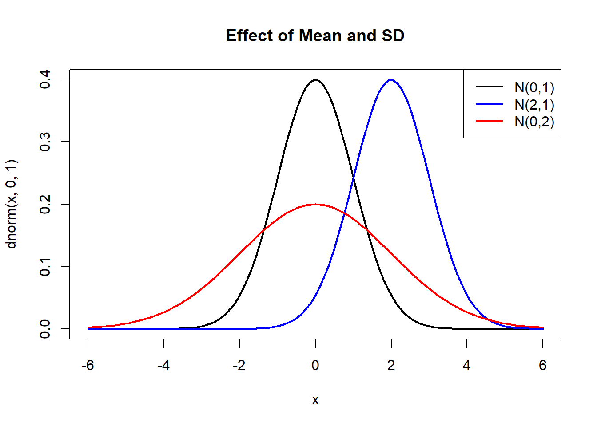
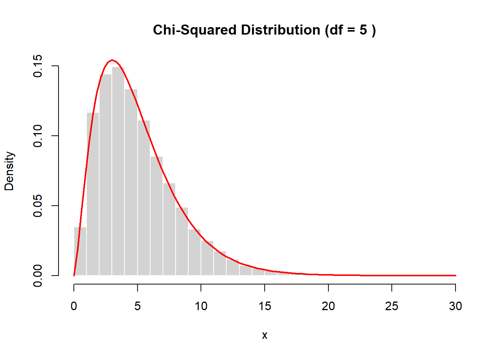
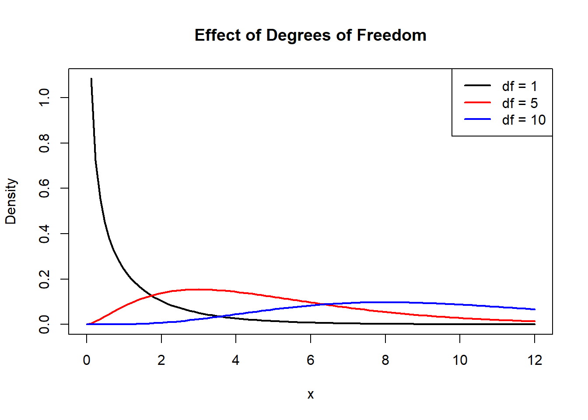

5 Introduction to Probability
Probability provides a mathematical framework for reasoning about uncertainty and complexity.
In this lecture, we develop probability ideas using simulation and computation, treating probability models as data‑producing mechanisms. This approach emphasizes understanding over memorization and mirrors how probability is used in modern data analysis.
5.1 Probability as a Model for Uncertain and Complex Phenomena
5.1.1 Probability as a Data‑Producing Machine
Definition 5.1 (Probability Model) A probability model is a mathematical description of a process that produces data under uncertainty, assigning probabilities to possible outcomes.
Rather than viewing probability as an abstract formula, we interpret it as a machine that generates data.
Once a model is specified, we can simulate outcomes and study their long‑run behavior.
5.1.2 Example of an Uncertain Phenomenon
Uncertain phenomena are characterized by random variation, even when conditions appear identical.
Example:
- Tossing a fair coin
- Rolling a die
- Drawing a card from a shuffled deck
5.1.3 Example of a Complex Phenomenon
Complex phenomena involve many interacting components:
- Student performance
- Financial markets
- Weather systems
Even if deterministic rules exist, the combined system behaves unpredictably.
# Function Describing Population Growth
populationGrowth <- function(x = 1, r = 1, t = 1){
for(i in 1:t){
x <- r * x * (1 - x)
}
return(x)
}
# Samples obtained at different initial states for 10 periods
griSta <- seq(0.1,0.9, by = 0.001)
samPop <- populationGrowth(x = griSta, r = 4, t = 100)
# Print Table
names(samPop) <- griSta
print(round(samPop, 2))## 0.1 0.101 0.102 0.103 0.104 0.105 0.106 0.107 0.108 0.109 0.11 0.111 0.112 0.113 0.114 0.115 0.116 0.117 0.118 0.119 0.12 0.121 0.122 0.123
## 0.37 0.44 1.00 0.15 0.68 0.01 0.17 0.43 0.52 0.09 0.88 0.39 0.09 0.65 0.56 0.00 0.86 0.55 0.45 0.29 0.27 0.07 0.99 0.84
## 0.124 0.125 0.126 0.127 0.128 0.129 0.13 0.131 0.132 0.133 0.134 0.135 0.136 0.137 0.138 0.139 0.14 0.141 0.142 0.143 0.144 0.145 0.146 0.147
## 0.43 0.78 0.82 1.00 0.66 0.93 0.96 0.96 0.26 1.00 0.19 0.48 0.54 1.00 0.06 0.08 0.77 0.52 0.16 0.89 0.12 0.14 0.96 0.71
## 0.148 0.149 0.15 0.151 0.152 0.153 0.154 0.155 0.156 0.157 0.158 0.159 0.16 0.161 0.162 0.163 0.164 0.165 0.166 0.167 0.168 0.169 0.17 0.171
## 0.94 0.75 0.64 0.87 0.00 0.35 0.38 0.80 0.93 0.10 0.27 0.83 0.74 0.22 0.03 0.16 0.41 0.79 0.00 0.70 0.37 0.14 0.50 0.94
## 0.172 0.173 0.174 0.175 0.176 0.177 0.178 0.179 0.18 0.181 0.182 0.183 0.184 0.185 0.186 0.187 0.188 0.189 0.19 0.191 0.192 0.193 0.194 0.195
## 0.14 0.32 0.31 0.59 0.58 0.99 0.33 0.71 0.92 0.96 0.60 0.86 0.09 0.59 0.90 0.97 0.02 0.17 0.14 0.28 0.01 0.46 0.82 1.00
## 0.196 0.197 0.198 0.199 0.2 0.201 0.202 0.203 0.204 0.205 0.206 0.207 0.208 0.209 0.21 0.211 0.212 0.213 0.214 0.215 0.216 0.217 0.218 0.219
## 0.51 0.96 0.97 1.00 0.88 0.20 0.72 0.60 0.02 0.02 0.13 0.01 0.56 0.94 0.12 0.96 0.32 0.86 0.34 0.27 0.79 0.34 0.22 0.26
## 0.22 0.221 0.222 0.223 0.224 0.225 0.226 0.227 0.228 0.229 0.23 0.231 0.232 0.233 0.234 0.235 0.236 0.237 0.238 0.239 0.24 0.241 0.242 0.243
## 0.71 0.94 0.27 0.00 0.78 0.59 0.24 0.78 0.03 0.04 0.07 0.22 0.79 1.00 0.32 0.43 0.08 0.23 0.99 0.18 0.76 0.78 0.32 0.92
## 0.244 0.245 0.246 0.247 0.248 0.249 0.25 0.251 0.252 0.253 0.254 0.255 0.256 0.257 0.258 0.259 0.26 0.261 0.262 0.263 0.264 0.265 0.266 0.267
## 0.00 0.45 0.65 0.73 1.00 0.97 0.75 0.84 0.86 0.16 0.85 0.00 0.44 0.46 1.00 0.34 0.69 1.00 0.04 0.00 0.76 0.37 0.00 0.94
## 0.268 0.269 0.27 0.271 0.272 0.273 0.274 0.275 0.276 0.277 0.278 0.279 0.28 0.281 0.282 0.283 0.284 0.285 0.286 0.287 0.288 0.289 0.29 0.291
## 0.76 0.01 0.99 0.43 0.02 0.78 0.42 0.97 0.83 0.96 0.97 0.02 0.54 0.37 0.34 0.48 0.90 0.17 0.37 0.80 0.88 0.01 0.29 0.92
## 0.292 0.293 0.294 0.295 0.296 0.297 0.298 0.299 0.3 0.301 0.302 0.303 0.304 0.305 0.306 0.307 0.308 0.309 0.31 0.311 0.312 0.313 0.314 0.315
## 0.81 1.00 0.44 0.24 0.07 0.42 0.93 0.80 0.75 0.16 0.08 0.16 0.04 0.18 0.30 0.85 1.00 1.00 0.02 0.83 0.03 0.03 0.95 0.51
## 0.316 0.317 0.318 0.319 0.32 0.321 0.322 0.323 0.324 0.325 0.326 0.327 0.328 0.329 0.33 0.331 0.332 0.333 0.334 0.335 0.336 0.337 0.338 0.339
## 0.03 0.97 0.81 0.33 0.34 0.84 0.11 0.16 0.40 0.46 0.03 0.53 0.02 0.05 0.00 0.63 0.18 0.70 0.45 0.99 0.41 0.49 0.39 0.24
## 0.34 0.341 0.342 0.343 0.344 0.345 0.346 0.347 0.348 0.349 0.35 0.351 0.352 0.353 0.354 0.355 0.356 0.357 0.358 0.359 0.36 0.361 0.362 0.363
## 0.10 0.38 0.84 1.00 0.90 0.00 0.13 0.05 0.76 0.73 1.00 0.58 0.31 0.00 0.56 0.41 0.56 0.81 1.00 0.61 0.93 0.88 0.23 1.00
## 0.364 0.365 0.366 0.367 0.368 0.369 0.37 0.371 0.372 0.373 0.374 0.375 0.376 0.377 0.378 0.379 0.38 0.381 0.382 0.383 0.384 0.385 0.386 0.387
## 0.36 0.00 0.98 0.01 0.36 0.67 0.97 0.26 0.00 0.79 0.98 0.29 0.48 0.87 0.15 0.08 0.86 0.61 0.30 0.12 0.07 0.17 0.14 0.69
## 0.388 0.389 0.39 0.391 0.392 0.393 0.394 0.395 0.396 0.397 0.398 0.399 0.4 0.401 0.402 0.403 0.404 0.405 0.406 0.407 0.408 0.409 0.41 0.411
## 0.79 0.47 0.76 0.44 0.58 1.00 0.69 0.08 0.73 1.00 0.23 0.92 0.24 0.86 0.07 0.52 0.91 0.91 0.20 0.56 0.47 0.40 0.21 0.60
## 0.412 0.413 0.414 0.415 0.416 0.417 0.418 0.419 0.42 0.421 0.422 0.423 0.424 0.425 0.426 0.427 0.428 0.429 0.43 0.431 0.432 0.433 0.434 0.435
## 0.41 0.11 0.44 0.97 0.30 0.87 0.67 0.93 0.11 0.70 0.43 0.74 0.23 0.66 0.52 0.85 0.83 0.64 0.68 0.10 0.15 0.91 0.74 0.03
## 0.436 0.437 0.438 0.439 0.44 0.441 0.442 0.443 0.444 0.445 0.446 0.447 0.448 0.449 0.45 0.451 0.452 0.453 0.454 0.455 0.456 0.457 0.458 0.459
## 0.90 0.97 1.00 0.11 0.86 0.01 0.58 0.61 0.59 0.17 0.68 0.28 0.27 0.13 0.06 0.66 0.94 0.92 0.07 0.01 0.17 0.35 0.26 0.07
## 0.46 0.461 0.462 0.463 0.464 0.465 0.466 0.467 0.468 0.469 0.47 0.471 0.472 0.473 0.474 0.475 0.476 0.477 0.478 0.479 0.48 0.481 0.482 0.483
## 0.45 0.04 0.00 0.00 0.99 0.86 0.98 0.95 0.61 0.69 0.17 0.59 0.53 0.03 0.46 0.02 0.05 0.25 0.97 0.95 0.79 0.55 0.04 0.59
## 0.484 0.485 0.486 0.487 0.488 0.489 0.49 0.491 0.492 0.493 0.494 0.495 0.496 0.497 0.498 0.499 0.5 0.501 0.502 0.503 0.504 0.505 0.506 0.507
## 0.02 0.00 0.39 0.00 0.29 0.89 0.92 0.11 0.60 0.27 1.00 0.16 0.93 0.40 0.94 0.01 0.00 0.01 0.94 0.40 0.93 0.16 1.00 0.27
## 0.508 0.509 0.51 0.511 0.512 0.513 0.514 0.515 0.516 0.517 0.518 0.519 0.52 0.521 0.522 0.523 0.524 0.525 0.526 0.527 0.528 0.529 0.53 0.531
## 0.60 0.11 0.92 0.89 0.29 0.00 0.39 0.00 0.02 0.59 0.04 0.55 0.79 0.95 0.97 0.25 0.05 0.02 0.46 0.03 0.53 0.59 0.17 0.69
## 0.532 0.533 0.534 0.535 0.536 0.537 0.538 0.539 0.54 0.541 0.542 0.543 0.544 0.545 0.546 0.547 0.548 0.549 0.55 0.551 0.552 0.553 0.554 0.555
## 0.61 0.95 0.98 0.86 0.99 0.00 0.00 0.04 0.45 0.07 0.26 0.35 0.17 0.01 0.07 0.92 0.94 0.75 0.06 0.13 0.61 0.28 0.68 0.17
## 0.556 0.557 0.558 0.559 0.56 0.561 0.562 0.563 0.564 0.565 0.566 0.567 0.568 0.569 0.57 0.571 0.572 0.573 0.574 0.575 0.576 0.577 0.578 0.579
## 0.59 0.61 0.58 0.96 0.04 0.11 0.54 0.97 0.58 0.03 0.74 0.32 0.34 0.06 0.94 0.44 0.89 0.85 0.50 0.18 0.23 0.63 0.43 0.68
## 0.58 0.581 0.582 0.583 0.584 0.585 0.586 0.587 0.588 0.589 0.59 0.591 0.592 0.593 0.594 0.595 0.596 0.597 0.598 0.599 0.6 0.601 0.602 0.603
## 0.11 0.93 0.67 0.87 0.30 0.97 0.44 0.11 0.41 0.60 0.21 0.40 0.47 0.56 0.20 0.91 0.91 0.52 0.07 0.86 0.24 0.92 0.23 1.00
## 0.604 0.605 0.606 0.607 0.608 0.609 0.61 0.611 0.612 0.613 0.614 0.615 0.616 0.617 0.618 0.619 0.62 0.621 0.622 0.623 0.624 0.625 0.626 0.627
## 0.73 0.08 0.69 1.00 0.58 0.44 0.76 0.47 0.79 0.69 0.14 0.17 0.07 0.12 0.30 0.61 0.86 0.08 0.15 0.87 0.48 0.29 0.98 0.79
## 0.628 0.629 0.63 0.631 0.632 0.633 0.634 0.635 0.636 0.637 0.638 0.639 0.64 0.641 0.642 0.643 0.644 0.645 0.646 0.647 0.648 0.649 0.65 0.651
## 0.00 0.26 0.97 0.67 0.36 0.01 0.98 0.00 0.36 1.00 0.23 0.88 0.93 0.61 1.00 0.81 0.56 0.41 0.56 0.00 0.31 0.58 1.00 0.73
## 0.652 0.653 0.654 0.655 0.656 0.657 0.658 0.659 0.66 0.661 0.662 0.663 0.664 0.665 0.666 0.667 0.668 0.669 0.67 0.671 0.672 0.673 0.674 0.675
## 0.76 0.05 0.13 0.00 0.90 1.00 0.84 0.38 0.10 0.41 0.39 0.71 0.41 0.82 0.45 0.38 0.18 0.00 0.00 0.97 0.02 0.98 0.03 0.46
## 0.676 0.677 0.678 0.679 0.68 0.681 0.682 0.683 0.684 0.685 0.686 0.687 0.688 0.689 0.69 0.691 0.692 0.693 0.694 0.695 0.696 0.697 0.698 0.699
## 0.40 0.16 0.02 0.84 0.34 0.33 0.02 0.97 0.09 0.51 0.25 0.03 0.21 0.83 1.00 1.00 1.00 0.85 0.30 0.18 0.04 0.16 0.08 0.16
## 0.7 0.701 0.702 0.703 0.704 0.705 0.706 0.707 0.708 0.709 0.71 0.711 0.712 0.713 0.714 0.715 0.716 0.717 0.718 0.719 0.72 0.721 0.722 0.723
## 0.75 0.80 0.93 0.42 0.07 0.24 0.44 1.00 0.81 0.92 0.29 0.01 0.88 0.80 0.37 0.17 0.90 0.48 0.34 0.37 0.54 0.02 0.97 0.96
## 0.724 0.725 0.726 0.727 0.728 0.729 0.73 0.731 0.732 0.733 0.734 0.735 0.736 0.737 0.738 0.739 0.74 0.741 0.742 0.743 0.744 0.745 0.746 0.747
## 0.83 0.97 0.42 0.78 0.02 0.43 0.99 0.01 0.76 0.94 0.00 0.37 0.76 0.00 0.04 1.00 0.69 0.34 1.00 0.46 0.44 0.00 0.85 0.16
## 0.748 0.749 0.75 0.751 0.752 0.753 0.754 0.755 0.756 0.757 0.758 0.759 0.76 0.761 0.762 0.763 0.764 0.765 0.766 0.767 0.768 0.769 0.77 0.771
## 0.86 0.84 0.75 0.97 1.00 0.73 0.65 0.45 0.00 0.69 0.68 0.56 0.76 0.92 0.74 0.20 0.24 1.00 0.78 0.78 0.79 0.88 0.17 0.03
## 0.772 0.773 0.774 0.775 0.776 0.777 0.778 0.779 0.78 0.781 0.782 0.783 0.784 0.785 0.786 0.787 0.788 0.789 0.79 0.791 0.792 0.793 0.794 0.795
## 1.00 0.84 0.24 0.71 0.73 0.00 0.77 0.69 0.01 0.26 0.22 1.00 0.00 0.14 0.73 0.00 0.87 0.96 0.75 0.02 0.10 0.01 0.43 0.70
## 0.796 0.797 0.798 0.799 0.8 0.801 0.802 0.803 0.804 0.805 0.806 0.807 0.808 0.809 0.81 0.811 0.812 0.813 0.814 0.815 0.816 0.817 0.818 0.819
## 0.54 0.84 0.11 0.20 0.55 1.00 0.56 1.00 0.06 0.79 0.93 0.43 0.01 0.54 0.92 0.14 0.89 0.97 0.81 0.28 0.26 0.86 0.60 0.30
## 0.82 0.821 0.822 0.823 0.824 0.825 0.826 0.827 0.828 0.829 0.83 0.831 0.832 0.833 0.834 0.835 0.836 0.837 0.838 0.839 0.84 0.841 0.842 0.843
## 1.00 0.81 0.96 0.53 0.99 0.88 0.31 0.89 0.14 0.94 0.00 0.17 0.21 0.70 0.00 0.79 0.80 0.16 0.69 0.22 0.88 0.09 0.27 1.00
## 0.844 0.845 0.846 0.847 0.848 0.849 0.85 0.851 0.852 0.853 0.854 0.855 0.856 0.857 0.858 0.859 0.86 0.861 0.862 0.863 0.864 0.865 0.866 0.867
## 0.93 0.80 0.38 0.35 0.00 0.87 0.64 0.75 0.94 0.71 0.96 0.14 0.12 0.89 0.16 0.52 0.77 0.08 0.06 1.00 0.54 0.48 0.19 1.00
## 0.868 0.869 0.87 0.871 0.872 0.873 0.874 0.875 0.876 0.877 0.878 0.879 0.88 0.881 0.882 0.883 0.884 0.885 0.886 0.887 0.888 0.889 0.89 0.891
## 0.26 0.96 0.96 0.93 0.66 1.00 0.82 0.78 0.43 0.84 0.99 0.00 0.60 0.29 0.45 0.55 0.86 0.60 0.56 0.15 1.00 0.20 0.94 0.87
## 0.892 0.893 0.894 0.895 0.896 0.897 0.898 0.899 0.9
## 0.52 0.04 0.00 0.00 0.42 0.02 0.99 0.44 0.37
5.1.4 Using Models to Explain Phenomena
Models simplify reality while retaining essential structure.
A good probability model:
- Explains observed variability
- Produces realistic simulated data
- Can be refined as new information becomes available
5.1.5 Final Idea: Inference Without a Model
When you don’t have a model it is really hard to do inference.
All of probability and statistics rely, either explicitly or implicitly, on the existence of a model that describes how data are generated.
A model provides a structured description of uncertainty. It specifies: - what outcomes are possible, - how these outcomes are related, - and how frequently they are expected to occur.
Without such a structure, observed data are simply a collection of numbers or categories with no principled way to generalize beyond what has already been seen.
In probability theory, models play the role of an idealized data‑generating mechanism. They allow us to ask meaningful questions such as: - How surprising is this outcome? - What should we expect to see if the process repeats? - How does changing assumptions affect long‑run behavior?
When a model is clearly defined, inference becomes possible because we can compare observed data to what the model predicts. Differences between data and model expectations can then be interpreted as evidence about the underlying process.
By contrast, without a model: - There is no clear notion of what outcomes are “likely” or “unlikely.” - Uncertainty cannot be quantified in a principled way. - There is no reliable mechanism for extrapolation beyond the observed data. - Conclusions become informal, subjective, or anecdotal.
Definition 5.2 (Statistical Inference) Statistical inference is the process of drawing conclusions about an underlying process, population, or mechanism by comparing observed data to a probabilistic model.
5.2 Interpretations of Probability
5.2.1 Classical Interpretation
Definition 5.3 (Classical Probability) Classical probability defines the probability of an event as the ratio of the number of favorable outcomes to the total number of equally likely outcomes.
The classical interpretation is the earliest formal approach to probability. It views probability as a logical consequence of symmetry in a well‑defined experiment. When all outcomes are equally plausible before the experiment is performed, probability can be computed by simple counting.
This approach treats probability as an a priori quantity: probabilities are determined entirely by the structure of the experiment, not by observed data.
5.2.1.1 History
The classical interpretation emerged in the 17th and 18th centuries, primarily through the study of games of chance.
Key contributors include:
- Blaise Pascal and Pierre de Fermat, who studied fair division of gambling stakes.
- Pierre‑Simon Laplace, who formalized probability as a mathematical discipline.
During this period, probability problems typically involved:
- dice,
- cards,
- coins,
- lottery‑type mechanisms.
These systems were appealing because they naturally possessed symmetry, making the assumption of equally likely outcomes reasonable.
5.2.1.2 Key Assumption: Equally Likely Outcomes
The classical definition requires that all outcomes in the sample space are equally likely.
This assumption is critical and restrictive.
Consequences:
- Classical probability works well for idealized systems with symmetry.
- It becomes difficult or impossible to apply when outcomes are not equally likely or when the sample space is not finite and well defined.
Thus, the classical interpretation is best viewed as a modeling choice, not a universal definition.
5.2.1.3 Example: Rolling a Fair Die
Consider rolling a well‑balanced six‑sided die.
- The sample space contains 6 outcomes:
{1, 2, 3, 4, 5, 6} - Each outcome is assumed equally likely.
The probability of rolling a 4 is therefore:
## [1] 0.1666667This probability is computed before any data are collected and does not depend on repeated trials.
5.2.1.4 Outcomes and Events
Definition 5.4 (Outcome) An outcome is a single possible result of a random experiment.
Examples:
- Rolling a 4 on a die
- Drawing the Ace of Spades from a deck
- Getting Heads in a coin toss
Outcomes represent the most granular level of description of a random experiment.
Definition 5.5 (Event) An event is a collection of one or more outcomes.
Examples:
- Rolling an even number: {2, 4, 6}
- Drawing a face card from a deck
- Getting at least one Head in two coin tosses
An event can be interpreted as a question about the experiment whose answer is either yes (the event occurs) or no (the event does not occur).
5.2.1.5 Strengths and Limitations of the Classical Interpretation
Strengths
- Simple and intuitive
- Requires no data
- Provides exact probabilities in symmetric settings
Limitations
- Depends critically on the equally likely assumption
- Not suitable for complex, real‑world phenomena
- Does not explain how probabilities change or emerge with repeated observations
These limitations motivate alternative interpretations of probability, especially those based on long‑run behavior and data‑driven modeling.
In summary, the classical interpretation introduces probability as a counting rule based on symmetry. While historically foundational and mathematically elegant, it is best understood as a special case of probability modeling, applicable only when symmetry and equally likely outcomes are plausible assumptions.
5.2.2 Relative Frequency Interpretation
Definition 5.6 (Relative Frequency Probability) Probability is defined as the long‑run proportion of times an event occurs when a random experiment is repeated under identical conditions.
The relative frequency interpretation views probability not as a purely theoretical quantity, but as a property that emerges through repetition. Under this interpretation, probability is tied directly to observable data and is meaningful only in contexts where an experiment can, at least in principle, be repeated many times.
Rather than assuming equally likely outcomes, this approach defines probability through empirical behavior. Probabilities are not assigned in advance; they are revealed through repeated trials.
5.2.2.1 History
The relative frequency interpretation developed primarily in the 19th and early 20th centuries, alongside advances in experimental science and statistics.
Key features of its historical development:
- Closely associated with scientists such as John Venn and Richard von Mises
- Motivated by the need to describe probabilities in physical and social phenomena
- Emphasized objectivity through repeatable experiments
This interpretation arose as a response to the limitations of classical probability, especially in situations lacking symmetry or equally likely outcomes.
5.2.2.2 Core Idea: Long‑Run Behavior
Under the relative frequency interpretation:
- Probability is not about a single trial
- Probability is about what happens in the long run
A single coin toss provides no meaningful probability information. Thousands of tosses, however, reveal stable patterns.
This interpretation implicitly assumes:
- The experiment can be repeated indefinitely
- The underlying mechanism remains stable over time
5.2.2.3 Probability as an Approximation
In practice, probabilities are approximated, not known exactly. The relative frequency of an event after \(n\) trials is:
\[ \text{Relative Frequency} = \frac{\text{Number of times the event occurs}}{n} \]
Simulation provides a natural way to observe this idea.
p <- 0.4
n <- 1000
samCoi <- sample(c("Heads", "Tails"), size = n, replace = TRUE, prob = c(p, 1 - p))
relFreHea <- sum(samCoi == "Heads") / n
print(relFreHea)## [1] 0.412Each execution of this code generates a different result, but as the number of trials increases, the relative frequency tends to stabilize near a constant value.
This stabilization is an empirical manifestation of the Law of Large Numbers that we will talk about later.
5.2.2.4 Interpretation and Modeling Perspective
From a modeling standpoint, the relative frequency interpretation treats probability as a feature of the data‑generating process. The model is validated not by symmetry or logic alone, but by consistency between:
- simulated behavior,
- observed data,
- and long‑run frequencies.
Probability models under this interpretation are often assessed by asking:
- Do simulated frequencies resemble observed frequencies?
- Does the model reproduce stable long‑run patterns?
5.2.2.5 Strengths and Limitations
Strengths
- Grounded in observable data
- Does not require equally likely outcomes
- Naturally compatible with simulation and computation
Limitations
- Requires repeatable experiments
- Not applicable to one‑time events (e.g., a specific election outcome)
- Does not directly address uncertainty in small samples
In summary, the relative frequency interpretation reframes probability as a long‑run empirical regularity. It forms the conceptual foundation for simulation‑based probability and provides a bridge between abstract models and observed data.
Here is an expanded, textbook‑style version of the Subjective Interpretation, written fully in R Markdown, consistent with your formatting rules and the level of depth used for the Classical and Relative Frequency sections. It emphasizes modeling, information, and belief, with a clear conceptual narrative.
5.2.3 Subjective Interpretation
Definition 5.7 (Subjective Probability) Subjective probability represents an individual’s degree of belief about the occurrence of an event, given the information available to them.
The subjective interpretation treats probability as a measure of uncertainty based on information, judgment, and belief, rather than symmetry or long‑run frequency. Under this view, probability quantifies how strongly an individual believes an event will occur, conditional on what they currently know.
Unlike classical or relative frequency interpretations, subjective probability does not require repeatable experiments or equally likely outcomes. Instead, it is fundamentally conditional on information and is allowed to change as new information becomes available.
5.2.3.1 History
The subjective interpretation developed primarily in the 20th century and is closely associated with the rise of Bayesian statistics.
Key contributors include:
- Frank Ramsey, who linked probability to rational decision‑making
- Bruno de Finetti, who argued that “probability does not exist” outside personal belief
- Later formalization within Bayesian inference and decision theory
This interpretation arose from the need to reason probabilistically about:
- unique or one‑time events,
- decision‑making under uncertainty,
- situations where long‑run frequencies are unavailable or meaningless.
5.2.3.2 Core Idea: Probability as Information‑Dependent Belief
Under the subjective interpretation:
- Probability is always conditional on available information.
- Different individuals may assign different probabilities to the same event.
- Updating beliefs in light of new data is a central feature.
From a modeling perspective, a subjective probability model represents the analyst’s state of knowledge rather than an objective property of the physical world.
As information changes, probabilities are updated accordingly, typically using Bayes’ theorem.
5.2.3.3 Example: Betting Interpretation
One way to operationalize subjective probability is through betting behavior.
If you are willing to bet $70 to win $100 on an event occurring, your implied probability is:
## [1] 0.7This value represents the minimum probability at which you consider the bet fair, given your beliefs and risk tolerance.
In this framework:
- Probabilities reflect willingness to accept risk
- Inconsistent probabilities can lead to guaranteed losses (Dutch books)
- Rational probability assignments are those that avoid sure loss
5.2.3.4 Subjective Probability as a Model
In subjective probability, a probability model represents beliefs about how the world operates, not just observed frequencies. These models are often used when:
- events are unique (e.g., an election outcome),
- data are scarce or incomplete,
- decisions must be made before data are observed.
Such models are evaluated not by long‑run frequencies, but by:
- internal coherence,
- consistency with observed evidence,
- usefulness for decision‑making.
5.2.3.5 Strengths and Limitations
Strengths
- Applicable to one‑time or non‑repeatable events
- Naturally incorporates prior knowledge and expert judgment
- Provides a coherent framework for updating beliefs
Limitations
- Depends on subjective judgment
- Different individuals may disagree
- Requires careful justification of assumptions
In summary, the subjective interpretation views probability as a quantitative expression of uncertainty given information. It plays a central role in Bayesian modeling, where probability models evolve as data are observed, and inference is understood as a process of belief updating rather than long‑run stabilization.
5.3 How to Build Probability Models
5.3.1 Finding the Probability of an Event
Definition 5.8 (Probability of an Event) The probability of an event is the sum of the probabilities of the outcomes that compose the event.
In probability theory, events are not primitive objects. Instead, they are built from outcomes, which represent the most basic possible results of a random experiment. A probability model assigns probabilities to these outcomes, and the probability of any event is obtained by aggregating the probabilities of the outcomes that form the event.
From a modeling perspective, this definition emphasizes that probability is additive over disjoint outcomes. Once the model specifies probabilities at the outcome level, probabilities for more complex events follow automatically.
In classical settings, this is achieved through counting. In simulation‑based approaches, this aggregation is approximated empirically.
5.3.1.1 Simulation Approach to Event Probability
Rather than computing probabilities analytically, we can estimate probabilities through repeated simulation.
For example, consider estimating the probability of rolling a 6 on a fair die.
## [1] 0.1629Each simulation run produces a slightly different value, but as the number of trials increases, the estimate stabilizes. This illustrates how probability emerges as a long‑run average behavior of a model, rather than a single deterministic calculation.
This computational viewpoint aligns naturally with the relative frequency interpretation of probability.
5.3.2 Basic Event Relations and Probability Laws
The power of probability models lies not only in assigning probabilities to single events, but in understanding how events combine and relate to one another. These relationships are governed by fundamental probability laws that hold regardless of the specific model used.
5.3.2.1 Mutually Exclusive Events
Definition 5.9 (Mutually Exclusive Events) Two events are mutually exclusive if they cannot occur at the same time.
Mutually exclusive events share no common outcomes. If one event occurs, the other cannot.
Examples:
- Rolling a die and obtaining a 1 versus obtaining a 2
- Drawing a card that is a heart versus drawing a card that is a spade
Because these events do not overlap, their probabilities combine in a particularly simple way.
Definition 5.10 (Probability of Mutually Exclusive Events) If A and B are mutually exclusive, then
P(A ∪ B) = P(A) + P(B).
This property follows directly from the definition of probability as additive over disjoint outcomes.
5.3.2.2 Simulation Example
Estimate the probability that a fair die roll results in either a 1 or a 2.
dieRol <- sample(1:6, 10000, TRUE)
pro12 <- mean(dieRol %in% c(1, 2))
pro1 <- mean(dieRol == 1)
pro2 <- mean(dieRol == 2)
print(paste0("Probability of 1: ", pro1))## [1] "Probability of 1: 0.1712"## [1] "Probability of 2: 0.1663"## [1] "Probability of 1 and 2: 0.3375"This probability is approximately twice the probability of a single outcome because the events are mutually exclusive.
5.3.2.3 Complement Events
Definition 5.11 (Complement of an Event) The complement of an event A consists of all outcomes that are not in A.
Every event has a complement, representing the event “not A.” Together, an event and its complement exhaust the entire sample space.
Definition 5.12 (Probability of the Complement) P(Aᶜ) = 1 − P(A)
This identity is fundamental and does not depend on assumptions such as equal likelihood or independence. It follows from the fact that the total probability of the sample space is 1.
5.3.2.4 Simulation Example
Estimate the probability of not rolling a 1 on a fair die.
## [1] "Probability of rolling a 1 : 0.1655"## [1] "Probability of not rolling a 1 : 0.8345"Using the complement is often computationally simpler, especially when the event of interest is complicated but its complement is not.
5.3.3 Properties of Probability
Probability models are governed by a small set of foundational properties that ensure internal consistency.
Definition 5.13 (Probability Model Properties) A probability model must satisfy:
- 0 ≤ P(A) ≤ 1
- P(S) = 1
- If A and B are mutually exclusive, P(A ∪ B) = P(A) + P(B)
These axioms define what it means for a function to be a valid probability measure. All other probability rules can be derived from them.
5.3.3.1 Unions and Intersections of Events
Definition 5.14 (Union of Events) The union of events A and B consists of all outcomes that are in A or B (or both).
Definition 5.15 (Intersection of Events) The intersection of events A and B consists of all outcomes that are in both A and B.
Unlike mutually exclusive events, most events overlap, meaning their intersection is not empty. In such cases, naïvely adding probabilities would double‑count shared outcomes.
Definition 5.16 (Probability of the Union) P(A ∪ B) = P(A) + P(B) − P(A ∩ B)
This formula corrects for double counting and is essential for building probability models in realistic settings.
5.3.3.2 Modeling Perspective
From a modeling standpoint, these properties:
- ensure internal consistency of probability assignments,
- allow complex event probabilities to be constructed from simpler ones,
- connect analytical probability laws with simulation‑based estimation.
In computational probability, unions, intersections, and complements are implemented using logical operations on simulated data, reinforcing the interpretation of probability models as data‑generating mechanisms.
5.3.4 Conditional Probability
Definition 5.17 (Conditional Probability) The conditional probability of an event A given that event B has occurred is
\[
P(A \mid B) = \frac{P(A \cap B)}{P(B)}, \quad \text{provided } P(B) > 0.
\]
Conditional probability formalizes the idea of updating probabilities when additional information is available. Rather than asking whether event A occurs in general, we now ask whether A occurs given that B has already occurred.
From a modeling perspective, conditioning restricts attention to a reduced sample space: only those outcomes consistent with event B are considered possible. Probabilities are then rescaled so that this restricted space has total probability 1.
In this way, conditional probability connects probability models to the flow of information.
5.3.4.1 Interpretation via Simulation
Consider a fair die. Let:
- A = {the outcome is 4}
- B = {the outcome is greater than 3}
Rather than reasoning abstractly, we estimate this conditional probability by simulation.
dieRol <- sample(1:6, 10000, TRUE)
proCon <- mean(dieRol == 4 & dieRol > 3) / mean(dieRol > 3)
print(paste0("Conditional probability of rolling a 4 given that a number greater than 3 is rolled: ", proCon))## [1] "Conditional probability of rolling a 4 given that a number greater than 3 is rolled: 0.322678535302448"Here:
dieRol > 3identifies the outcomes consistent with the condition B,dieRol == 4 & dieRol > 3identifies outcomes where both A and B occur.
The ratio estimates the probability of rolling a 4 given that the roll exceeds 3.
This computational approach makes the conditioning mechanism explicit: we focus only on simulated outcomes where B occurs and examine how often A appears within that subset.
5.3.4.2 Conditional Probability as a Modeling Tool
Conditional probabilities are central to probabilistic modeling because they allow us to express structured dependence between events. In complex systems, probabilities rarely exist in isolation; they reflect assumptions about what is known and unknown.
Practically, conditional probabilities help answer questions of the form:
- What is the chance of A when we know B has happened?
- How does information change our expectations?
Definition 5.18 (Marginal Probability) A marginal (or unconditional) probability is the probability of an event considered without conditioning on any other event.
The marginal probability describes the baseline likelihood of an event across the entire sample space, before incorporating additional information.
For the same die example, the marginal probability of rolling a 4 is:
proMar <- mean(die == 4)
print(paste0("Conditional probability of rolling a 4 given that a number greater than 3 is rolled: ", proCon))## [1] "Conditional probability of rolling a 4 given that a number greater than 3 is rolled: 0.322678535302448"## [1] "Marginal probability of rolling a 4: 0.1595"Comparing marginal and conditional probabilities highlights how information can increase, decrease, or leave unchanged the likelihood of an event.
5.3.5 Law of Total Probability
Definition 5.19 (Law of Total Probability) If events \(B_1, B_2, \dots, B_n\) form a partition of the sample space, then \[ P(A) = \sum_{i=1}^{n} P(A \mid B_i)\,P(B_i). \]
The Law of Total Probability provides a way to compute the probability of an event by decomposing it into simpler scenarios. Each event \[B_i\] represents a mutually exclusive and exhaustive case under which A might occur.
From a modeling perspective, this law expresses how overall probability emerges from conditional structure. It is especially useful when direct computation of \[P(A)\] is difficult, but conditional probabilities are easier to specify or estimate.
5.3.6 Bayes’ Formula
Definition 5.20 (Bayes' Formula) For events A and B with P(A) > 0, \[ P(B \mid A) = \frac{P(A \mid B)\,P(B)}{P(A)}. \]
Bayes’ formula reverses the direction of conditioning. Instead of computing the probability of observing A given B, it computes the probability of B given that A has been observed.
This inversion is fundamental to Bayesian modeling, where probabilities are updated as data arrive. Prior beliefs \[P(B)\] are combined with evidence \[P(A \mid B)\] to produce updated beliefs \[P(B \mid A)\].
5.3.6.1 Simulation Example: Medical Testing
We illustrate Bayes’ formula using a diagnostic testing scenario.
# Bayes example via simulation
proInf <- 0.01
## Sample disease status
disease <- sample(c(TRUE, FALSE), 100000, TRUE, prob = c(proInf, 1 - proInf))
## Sample test results given disease status
sen <- 0.95
spe <- 0.05
test <- ifelse(disease,
sample(c(TRUE,FALSE), 100000, TRUE,prob=c(sen, 1 - sen)),
sample(c(TRUE,FALSE), 100000, TRUE,prob=c(1- spe, spe)))
mean(disease[test])## [1] 0.01005025In this simulation:
- Only 1% of individuals have the disease,
- The test is accurate but imperfect,
- We compute the probability of disease given a positive test result.
Despite high test accuracy, the conditional probability may be much lower than expected due to the rarity of the disease. This illustrates how conditioning can dramatically change intuitive conclusions.
Definition 5.21 (States of Nature and Observable Events) States of nature represent the true but unobserved condition of a system, while observable events are the data or measurements produced by that system.
Bayesian reasoning explicitly distinguishes between:
- states of nature, which are unknown but real,
- observable events, which provide indirect information about those states.
Conditional probability provides the mathematical bridge between what we observe and what we wish to infer.
5.3.7 Modeling Perspective Summary
Conditional probability is not merely a computational rule—it is a modeling principle. It encodes how information alters uncertainty, enables the construction of hierarchical and Bayesian models, and connects probability theory directly to inference.
In simulation‑based approaches, conditioning is implemented by subsetting data and renormalizing, reinforcing the idea that probability models are best understood as data‑generating mechanisms shaped by information.
5.4 Summary First Part: Intro to Probability
- Probability models are data‑generating mechanisms
- Simulation connects theory to observable behavior
- Different interpretations serve different purposes
- Conditional probability and Bayes’ formula link belief, data, and inference
Understood. Here is the expanded text with inline math using $ $ instead of \(...\) or \[...\], while keeping your structure and code chunks unchanged.
5.5 Independence of events
5.5.1 Definition
Definition 5.22 (Independence of Events) Two events A and B are independent if the occurrence of one does not change the probability of the other: \[ P(A \mid B) = P(A) \quad\text{and}\quad P(B \mid A) = P(B). \] Equivalently, \[ P(A \cap B) = P(A) P(B). \]
Independence is a structural assumption about the probability model. It is not something that can be verified with certainty from finite data; rather, it is justified by the way the experiment is constructed or by scientific knowledge about the mechanism generating the data.
Informally, two events are independent if learning that one has occurred provides no information about whether the other occurs. In that case, knowing that event \(B\) happened leaves the probability of \(A\) unchanged: \(P(A \mid B) = P(A).\)
Using the definition of conditional probability, \(P(A \mid B) = \frac{P(A \cap B)}{P(B)},\) we see that (provided \(P(B) > 0\)) independence is equivalent to \(P(A \cap B) = P(A)P(B).\)
This multiplicative rule is often the most convenient working definition: when events are independent, the probability that both occur equals the product of their marginal probabilities.
It is important to distinguish between:
- Mathematical independence: a property defined within a probability model.
- Empirical evidence: data may suggest approximate independence, but cannot prove it exactly.
In practice, we often assume independence because the design of the experiment makes interaction between outcomes implausible (for example, separate coin flips or independent sampling with replacement).
5.5.2 Example 1: Independent Events
- Event A = “first die shows 6”
- Event B = “second die shows 1”
When two dice are rolled independently, the outcome of one die does not affect the outcome of the other. Thus, \[P(A)=\frac{1}{6}, \qquad P(B)=\frac{1}{6}, \qquad P(A\cap B)=\frac{1}{36}.\] We should therefore observe \[P(A\cap B)=P(A)P(B).\]
The following simulation approximates these probabilities.
## [1] 0.02806## [1] 0.02801439With a large number of repetitions, the two quantities should be very close, illustrating the multiplicative rule for independent events.
5.5.3 Example 2: Independent Events (Card Draws)
- Event A = “draw a heart”
- Event B = “draw a king”
If we draw with replacement (or equivalently draw from two independent decks), the events are independent. The probability of drawing a heart on one draw does not affect the probability of drawing a king on another.
\[ P(A)=\frac{13}{52}=\frac{1}{4}, \qquad P(B)=\frac{4}{52}=\frac{1}{13}. \]
Hence, \[ P(A\cap B)=\frac{1}{4}\cdot\frac{1}{13}=\frac{1}{52}. \]
The simulation below draws two cards and verifies the multiplicative relationship.
suits <- rep(c("H","S","D","C"), each = 13)
ranks <- rep(1:13, 4)
deck <- data.frame(suits, ranks)
sampA <- deck[sample(1:52, 100000, TRUE), ]
sampB <- deck[sample(1:52, 100000, TRUE), ]
mean(sampA$suits == "H" & sampB$ranks == 13)## [1] 0.01923## [1] 0.01926205Again, the simulated joint probability should be close to the product of the marginal probabilities.
5.5.4 Example of Dependent Events
Cards without replacement:
- Event A = “first card is Ace”
- Event B = “second card is Ace”
Here the events are not independent. If the first card is an Ace, there are only three Aces left in the deck, so the probability that the second card is an Ace decreases. Specifically, \[ P(B \mid A) = \frac{3}{51} \neq \frac{4}{52} = P(B). \]
Thus, \[ P(A\cap B) = P(A)P(B \mid A) = \frac{4}{52}\cdot\frac{3}{51}, \] which is not equal to \(P(A)P(B)\).
The simulation below illustrates this dependence.
set.seed(2)
count <- 0
rep <- 20000
for(i in 1:rep){
sel1 <- sample(x = 1:52, size = 1)
sel2 <- sample(x = (1:52)[-sel1], size = 1)
A <- deck$ranks[sel1] == 1
B <- deck$ranks[sel2] == 1
count <- count + (A & B)
}
count/rep## [1] 0.00355## [1] 0.00591716The simulated joint probability is smaller than the product \((4/52)^2\), reflecting the negative dependence introduced by sampling without replacement.
5.5.5 Independence vs. Mutually Exclusive
Two events are mutually exclusive if they cannot occur at the same time: \[ A \cap B = \varnothing. \] In that case, \[ P(A\cap B)=0. \]
If both \(P(A)\) and \(P(B)\) are positive, then \[ P(A)P(B) > 0, \] so \[ P(A\cap B)=0 \neq P(A)P(B). \]
Therefore, mutually exclusive events with positive probability cannot be independent.
The distinction is conceptual:
- Mutual exclusivity concerns impossibility: the events cannot happen together.
- Independence concerns information: knowing one event occurs does not change the probability of the other.
These ideas are fundamentally different. In fact, independence typically requires that events be able to occur together, whereas mutual exclusivity forbids it.
5.6 Random Variables
Random variables allow us to translate outcomes of an experiment into numerical quantities that can be analyzed algebraically. Formally, a random variable is not itself random; rather, it is a function defined on the sample space.
Let \(\Omega\) denote the sample space of an experiment. A random variable \(X\) is a function \[ X:\Omega \rightarrow \mathbb{R}, \] meaning that for each outcome \(\omega \in \Omega\), the random variable assigns a real number \(X(\omega)\).
This perspective is fundamental: probability is defined on events in the sample space, but statistical analysis is typically conducted using numerical values. Random variables provide the bridge between these two viewpoints.
Random variables are useful because they:
- Simplify notation,
- Allow probability models to be expressed algebraically,
- Make it possible to compute expectations, variances, and other summaries,
- Are convenient for simulation and computation.
Example (sum of two dice):
## [1] 6 7 9 7 7 4 9 3 5 5 7 5 6 6 6 7 8 11 5 10Here the experiment consists of rolling two dice. The sample space contains ordered pairs such as \((1,4)\) or \((6,6)\). The random variable \(X\) assigns to each outcome the sum of the two dice. For instance, if the outcome is \((2,5)\), then \(X=7\).
Thus, instead of working directly with pairs of dice outcomes, we work with the numerical values of their sum.
5.7 Discrete Random Variables
5.7.1 Introducing RVs as Convenient Labels for Outcomes
A random variable is a rule assigning numbers to outcomes. In many experiments, the outcomes themselves are complicated objects, but we only care about certain numerical summaries. A random variable extracts that information.
Examples:
- Number of heads in 3 flips
- Number of defective items in a batch
- Sum of two dice
- Number of emails received per hour
In each case, the underlying experiment may be complex, but the random variable records only the quantity of interest.
For example, in three coin flips the sample space has \(2^3=8\) outcomes, but the random variable “number of heads” takes only the values \(0,1,2,3\). Many different outcomes correspond to the same value of the random variable.
This many-to-one mapping is typical and useful: it reduces the complexity of the sample space while preserving the information relevant to the problem.
5.7.2 Qualitative Random Variable
Definition 5.23 (Random Variable (General) ) A random variable is a function that assigns a numerical value to each outcome of a random experiment.
In practice, not all variables of interest are naturally numerical. Some experiments produce categories rather than numbers. These are often called qualitative or categorical variables. Strictly speaking, probability theory still requires numerical values, but we can encode categories using labels.
Examples of qualitative outcomes:
- Weather: {sunny, cloudy, rainy}
- Political affiliation: {A, B, C}
- Survey response: {agree, neutral, disagree}
To treat these within the framework of random variables, we typically assign numerical codes (for example, 1 = sunny, 2 = cloudy, 3 = rainy). The numerical values themselves have no arithmetic meaning; they simply serve as labels.
Thus, qualitative variables can be represented numerically, but their interpretation remains categorical rather than quantitative.
5.7.3 Quantitative Random Variables
Definition 5.24 (Discrete Random Variable) A discrete random variable is one that takes on a countable set of possible values.
A discrete random variable has a finite or countably infinite set of possible values. These values often arise from counting processes.
Examples:
- Number of children in a family
- Number of goals in a soccer match
- Number of customers arriving in a minute
- Number of defective items in a shipment
In each case, the random variable can take values such as \(0,1,2,\dots\). Because the set of possible values is countable, we can assign a probability to each individual value.
This leads to the concept of a probability distribution for a discrete random variable.
5.7.4 Probability Distribution for a Discrete Random Variable
Definition 5.25 (Probability Distribution for a Discrete RV) A probability distribution assigns a probability to each possible value of a discrete random variable, satisfying:
- \(0 \le P(X=x) \le 1\)
- \(\sum_x P(X=x) = 1\)
The function \(p(x)=P(X=x)\) is called the probability mass function (pmf) of the discrete random variable. It describes how probability is distributed across the possible values of \(X\).
Two basic requirements must hold:
- Each probability must lie between 0 and 1.
- The probabilities over all possible values must sum to 1.
If either condition fails, the proposed function cannot be a valid probability distribution.
5.7.4.1 Example 1: Number of Heads in 3 Flips
Let \(X\) be the number of heads in three independent coin flips. The possible values are \(0,1,2,3\). The simulation below approximates the distribution.
## sims
## 0 1 2 3
## 0.1260667 0.3727000 0.3748333 0.1264000The empirical probabilities should be close to: \[ P(X=0)=\tfrac{1}{8},; P(X=1)=\tfrac{3}{8},; P(X=2)=\tfrac{3}{8},; P(X=3)=\tfrac{1}{8}. \]
5.7.4.2 Example 2: Sum of Two Dice
Let \(X\) be the sum of two dice. The possible values are \(2,3,\dots,12\). The distribution is not uniform: middle values such as 6, 7, and 8 occur more frequently because more combinations produce them.
## X
## 2 3 4 5 6 7 8 9 10 11 12
## 0.02985 0.05345 0.08290 0.11570 0.13940 0.16430 0.13830 0.11140 0.08005 0.05835 0.02630The simulation shows that \(P(X=7)\) is the largest probability, reflecting the six combinations that produce a sum of 7.
5.7.4.3 Example 3: Customers Arriving (Poisson-like simulation)
Counts of arrivals over time are often modeled using the Poisson distribution. The command below generates simulated counts with mean 3.
## [1] 2.9847Here the random variable represents the number of arrivals in a fixed time interval. Its possible values are \(0,1,2,\dots\).
Important: A proposed discrete distribution must satisfy the basic probability laws. In particular, the probabilities assigned to all possible values must sum to 1. Any proposed model that violates this condition cannot represent a valid random variable.
Random variables and their distributions form the foundation of statistical analysis. Once outcomes are expressed numerically, we can compute expectations, variances, and other summaries, and we can build probability models for real-world phenomena.
5.8 Important Discrete Distributions
Probability distributions provide standardized probabilistic models for commonly occurring types of random variables. Instead of building a model from scratch each time, we match a real-world situation to a known distribution whose mathematical properties are already understood.
A useful conceptual distinction:
- A random variable is the numerical quantity of interest.
- A distribution is the mathematical model describing how that quantity behaves probabilistically.
Once a random variable is associated with a known distribution, we can compute probabilities, expectations, variances, and make predictions using established formulas.
5.8.1 The Binomial Distribution
The binomial distribution models the number of successes in a fixed number of independent trials, where each trial has only two possible outcomes and a constant probability of success.
5.8.1.1 Customers Purchases
Suppose each customer independently makes a purchase with probability \(0.3\). Let \(X =\) number of purchasers among \(20\) customers.
Then \(X\) counts how many of the 20 independent customers make a purchase. This is a typical binomial setting.
## [1] 6.00541The simulated mean should be close to \(20 \times 0.3 = 6\), which is the theoretical expected value of a binomial random variable with parameters \(n=20\) and \(p=0.3\).
5.8.1.2 Definition: Binomial Experiment
A binomial model is appropriate when the following conditions hold:
- There is a fixed number of trials \(n\).
- Each trial has only two possible outcomes: success or failure.
- The probability of success \(p\) is the same for every trial.
- The trials are independent.
If all four conditions are satisfied, then the total number of successes follows a binomial distribution.
5.8.1.3 Independent Random Variables
Definition 5.26 (Independence of Random Variables) Random variables \(X\) and \(Y\) are independent if \[ P(X=x, Y=y) = P(X=x)P(Y=y) \] for all values \(x\) and \(y\).
Independence of random variables means that knowing the value of one random variable provides no information about the other. In this case, the joint probability distribution factors into the product of the marginal distributions.
It is important to distinguish:
Independence of events: \[ P(A \mid B) = P(A). \]
Independence of random variables: The joint distribution factorizes into marginal distributions.
Event independence is a statement about particular subsets of the sample space. Random-variable independence is a stronger statement about the entire joint distribution.
5.8.1.4 Binomial Examples
5.8.1.4.1 Coin Flips Example
Twenty independent coin flips with probability of heads \(p=0.5\). Let \(X\) be the number of heads.
## [1] 11 8 8 6 13 12 13 11 8 11All binomial conditions hold: fixed \(n\), two outcomes, constant probability, independence.
5.8.1.4.2 2. Not Binomial — Fails identical trials
Suppose the probability of success changes from trial to trial (for example, a machine that becomes less reliable over time). Then the trials are not identical, and the binomial model does not apply.
5.8.1.4.3 3. Not Binomial — Fails only two outcomes
Rolling a die produces six outcomes, not two. If we are counting something more complex than success/failure, the binomial model is inappropriate unless we recode outcomes into two categories.
5.8.1.5 PMF of the Binomial
Definition 5.27 (Binomial PMF) \[ P(X=k) = \binom{n}{k} p^k (1-p)^{n-k} \]
Here:
- \(n\) is the number of trials,
- \(p\) is the probability of success on each trial,
- \(k\) is the number of observed successes.
The binomial coefficient \[ \binom{n}{k} \] counts the number of ways to arrange \(k\) successes among \(n\) trials. The term \(p^k(1-p)^{n-k}\) gives the probability of any specific sequence with \(k\) successes and \(n-k\) failures.
Multiplying these gives the probability of observing exactly \(k\) successes.
5.8.1.6 Binomila Visualization

The shape of the binomial distribution depends on \(p\):
- \(p = 0.5\) → symmetric distribution
- \(p < 0.5\) → right-skewed
- \(p > 0.5\) → left-skewed
As \(n\) becomes large, the binomial distribution becomes more bell-shaped, especially when \(p\) is near \(0.5\).
5.8.1.7 Deriving the Poisson from the Binomial
The Poisson distribution can be obtained as a limiting case of the binomial distribution.
Suppose:
- \(n\) is large,
- \(p\) is small,
- \(\lambda = np\) remains fixed.
Then for fixed \(k\), \[ \binom{n}{k} p^k (1-p)^{n-k} \rightarrow \frac{e^{-\lambda}\lambda^k}{k!}. \]
This result explains why the Poisson distribution is often used to model counts of rare events occurring in a large number of opportunities.
5.8.2 The Poisson Distribution
The Poisson distribution models counts of events occurring over time, space, or some other continuous dimension, when events occur randomly and independently at a constant average rate.
5.8.2.1 Examples
- Number of website hits per minute
- Number of accidents per month
- Number of emails per hour
- Number of defects per unit length of material
In each case, we count how many events occur within a fixed interval.
5.8.2.2 Definition: Poisson Conditions
A Poisson model is appropriate when:
- Events occur independently.
- The average rate \(\lambda\) is constant over any interval of the same size.
- Events occur one at a time.
- The probability of more than one event in a very small interval is approximately zero.
These assumptions describe a process in which events occur randomly but with a stable average rate.
5.8.2.3 PMF
For a Poisson random variable \(X\) with rate parameter \(\lambda > 0\),
\[ P(X=k) = \frac{e^{-\lambda}\lambda^k}{k!}, \quad k=0,1,2,\dots \]
The parameter \(\lambda\) represents the expected number of events in the interval.
Example simulation:
##
## 0 1 2 3 4 5 6 7 8 9 10 12
## 0.0513 0.1495 0.2269 0.2226 0.1644 0.1066 0.0465 0.0213 0.0068 0.0032 0.0008 0.0001The simulated relative frequencies should approximate the theoretical Poisson probabilities with \(\lambda = 3\).
5.8.2.4 Properties of Poisson
For \(X \sim \text{Poisson}(\lambda)\):
\[ E[X] = \lambda, \]
\[ \text{Var}(X) = \lambda. \]
Thus, the mean and variance of a Poisson distribution are equal. This property is often used as a diagnostic when assessing whether a Poisson model is reasonable for observed data.
5.9 Continuous Random Variables
5.9.1 From Discrete to Continuous
Up to this point we have assigned probability directly to individual values of a random variable. This works naturally for discrete random variables, such as the number of heads in coin flips or the number of customers arriving in a store. In those settings, it makes sense to ask for probabilities like \(P(X=3)\) or \(P(X=10)\).
Many quantities in science and data analysis, however, are not naturally discrete. Measurements such as time, temperature, weight, voltage, and distance vary on a continuum. When we measure them, we record a finite number of decimal places, but conceptually they can take any value within an interval. These are modeled using continuous random variables.
A continuous random variable takes values on an interval (or a union of intervals) of the real line. Unlike discrete random variables, which take a countable set of values, a continuous random variable can take uncountably many possible values.
A key conceptual difference is that for a continuous random variable, \[ P(X = x) = 0 \] for any specific value \(x\). Individual points have zero probability because probability is spread continuously across an interval rather than concentrated at individual values.
This can initially feel counterintuitive. If \(X\) represents a measurement such as height, surely someone could have height exactly \(170\) cm. But in a continuous model, the probability of observing that exact number is zero because there are infinitely many possible values near 170, and probability is distributed across all of them.
The appropriate question is not “What is the probability that \(X\) equals exactly 170?” but rather:
\[ P(169.5 \le X \le 170.5). \]
We assign probability to intervals, not individual points.
Simulation example:
set.seed(2026)
x <- runif(n = 100000, min = 0, max = 100)
# Zero Probability for a Point
pro50 <- mean(x == 50) # always 0
# Non-zero probability for an Interval
proInt <- mean(49 < x & x < 51)
print(paste0("Probability getting exactly 50: ", round(pro50 * 100, 2), "%"))## [1] "Probability getting exactly 50: 0%"## [1] "Probability getting around 50: 2.03%"The simulation shows two important facts:
- The probability of observing exactly 50 is essentially zero.
- The probability of observing a value near 50 is positive.
Even though values close to 50 occur frequently, the probability of observing exactly 50 is zero in a continuous model.
Because single points have zero probability, probability must be assigned to intervals rather than individual values. For example,
\[ P(a \le X \le b) \]
represents the probability that \(X\) falls within an interval. Graphically, this probability corresponds to the area under a curve between \(a\) and \(b\).
This shift—from point probabilities to interval probabilities—is the defining feature of continuous distributions and marks the transition from discrete probability to continuous probability.
5.9.2 PDF and CDF
A continuous distribution is described using two related functions:
- the probability density function (PDF) \(f(x)\)
- the cumulative distribution function (CDF) \(F(x)\)
These functions play complementary roles.
5.9.2.1 Probability Density Function (PDF)
The PDF, denoted \(f(x)\), describes how probability is distributed across values of \(x\). It is a nonnegative function satisfying
\[ f(x) \ge 0 \]
and
\[ \int_{-\infty}^{\infty} f(x),dx = 1. \]
The PDF itself does not give probabilities directly. Instead, probabilities are obtained by integrating the density over an interval:
\[ P(a \le X \le b) = \int_a^b f(x),dx. \]
Thus, probability corresponds to area under the density curve. Regions where the density is high correspond to values of \(X\) that are more likely to occur.
5.9.2.2 Cumulative Distribution Function (CDF)
The CDF is defined as
\[ F(x) = P(X \le x). \]
It gives the total probability accumulated up to the point \(x\). For a continuous random variable, the CDF can be written in terms of the PDF:
\[ F(x) = \int_{-\infty}^{x} f(t),dt. \]
The CDF has several important properties:
- It is nondecreasing.
- It approaches 0 as \(x \to -\infty\).
- It approaches 1 as \(x \to \infty\).
Probabilities for intervals can be computed using the CDF:
\[ P(a \le X \le b) = F(b) - F(a). \]
Thus, the CDF accumulates probability up to a given point, while the PDF describes how probability density is distributed across values.
5.9.2.3 Example: Normal Distribution
The following code visualizes both the PDF and CDF for a normal distribution.


The first curve is the PDF of a normal distribution. It shows the familiar bell-shaped density.
The second curve is the CDF. It starts near 0, increases steadily, and approaches 1 as \(x\) increases. Each value of the CDF represents the probability that the random variable is less than or equal to that value.
Together, the PDF and CDF provide two complementary ways of describing a continuous random variable:
- The PDF describes how probability is distributed.
- The CDF describes how probability accumulates.
5.9.3 Interpreting Areas as Probabilities
A useful way to think about a continuous distribution is to imagine probability as area under a curve. The total area under the PDF is 1, representing total probability. Any subinterval corresponds to a portion of that area.
For example, consider a normal distribution again. The shaded region between two values represents the probability that the random variable falls in that interval.
curve(dnorm(x), -4, 4, lwd=2,
main="Probability as Area Under the Curve",
ylab="Density")
a <- -1
b <- 1
x <- seq(a, b, length=200)
y <- dnorm(x)
polygon(c(a, x, b), c(0, y, 0), col="lightblue")
abline(v=c(a,b), col="red", lty=2)
This shaded area corresponds to \[ P(-1 \le X \le 1). \]
We compute it numerically using the CDF:
## [1] 0.6826895Even though the PDF at a point gives the height of the curve, probability is always determined by area, not height. This distinction is essential:
- \(f(x)\) is not a probability.
- Probabilities come from integrals (areas).
5.9.4 Why the PDF Can Be Greater Than 1
Students often expect probabilities to be at most 1, and they are. However, the density \(f(x)\) itself can be greater than 1 in some distributions.
For example, consider a uniform distribution on a very small interval:

The height of this density is \(1/0.2 = 5\), which is greater than 1. This is not a problem because probability is area:
\[ \text{area} = \text{height} \times \text{width} = 5 \times 0.2 = 1. \]
Thus:
- The PDF describes density.
- Probability corresponds to area under the curve.
5.9.5 From Simulation to Density
A computational approach helps build intuition. We can simulate many observations and compare a histogram with a theoretical density.
set.seed(1)
x <- rnorm(5000)
hist(x, probability=TRUE, breaks=40,
main="Histogram and Density",
col="lightgray", border="white")
curve(dnorm(x), add=TRUE, lwd=2, col="blue")
The histogram approximates the distribution of simulated data. As the sample size increases:
- The histogram becomes smoother.
- It approaches the theoretical density curve.
This demonstrates an important principle:
A probability density function can be viewed as the limiting shape of a histogram as the number of observations grows and bin widths shrink.
5.9.6 Computing Interval Probabilities in R
In practice, we compute probabilities using built-in functions for distributions.
General pattern:
d*gives the density (PDF)p*gives cumulative probabilities (CDF)q*gives quantilesr*generates random values
For the normal distribution:
## [1] 0.3989423## [1] 0.9331928## [1] 0.8185946## [1] -1.5163733 0.6291412 -1.6781940 1.1797811 1.1176545These functions exist for many distributions and allow us to move seamlessly between:
- Simulation
- Visualization
- Analytical probability
5.9.7 Key Conceptual Shift
For discrete random variables:
- Probability is assigned to individual values.
- We sum probabilities.
For continuous random variables:
- Probability is assigned to intervals.
- We integrate densities.
In summary:
\[ P(X = x) = 0 \]
\[ P(a \le X \le b) = \int_a^b f(x),dx = F(b) - F(a). \]
This framework—probability as accumulated area—will guide everything that follows when we study specific continuous distributions.
5.10 Important Continuous Distributions
5.10.1 The Uniform Distribution
The uniform distribution is the most intuitive continuous distribution. Every value in an interval is equally likely.
5.10.1.1 Discrete Uniform
Rolling a fair die is a discrete uniform distribution: each value has equal probability.
##
## 1 2 3 4 5 6 7 8 9 10
## 0.1007 0.0958 0.1017 0.1004 0.1002 0.0986 0.1087 0.0987 0.0982 0.09705.10.1.2 Continuous Uniform
A continuous uniform distribution on \([a,b]\) has density
\[ f(x) = \frac{1}{b-a}, \quad a \le x \le b. \]
Simulation:
x <- runif(10000,0,10)
hist(x, probability=TRUE, breaks=30)
curve(dunif(x,0,10), add=TRUE, col="red", lwd=2)
5.10.1.3 From Discrete to Continuous Uniform
If we refine a discrete uniform grid enough, it begins to resemble a continuous uniform distribution.
samSiz <- 10000
x <- sample(seq(0,10,length=samSiz), samSiz, TRUE)
hist(x, probability=TRUE, breaks=30)
On a fine grid, discrete and continuous uniform models can look nearly identical.
5.10.2 The Normal Distribution
The normal distribution is the most important distribution in statistics. It serves both as a theoretical model and as a practical approximation for many real-world phenomena.
It appears in:
- measurement error
- biological traits
- averages and sample means
- noise in physical and engineering systems
Because of its mathematical properties and frequent appearance in data, the normal distribution is a central reference point for statistical modeling.
5.10.2.1 Where Does It Come From?
The normal distribution often arises as the sum of many small, independent effects. Each individual effect may not be normal, but their sum tends to be approximately normal. This phenomenon is formalized by the Central Limit Theorem (which we will study later).
A computational illustration helps build intuition.
set.seed(2026)
s <- replicate(10000, sum(runif(10, -1, 1)))
hist(s, probability=TRUE, breaks=40,
main="Sum of Uniform Variables",
col="lightgray", border="white")
curve(dnorm(x, mean(s), sd(s)),
add=TRUE, col="red", lwd=2)
Each observation in s is the sum of 10 uniform random variables. Even though the underlying variables are not normal, the distribution of their sum is approximately normal.
This idea explains why normal distributions appear so often:
Many processes are influenced by numerous small, independent factors. Their combined effect tends to be approximately normal.
5.10.2.2 The Normal Curve
If \(X \sim N(\mu,\sigma^2)\), its probability density function is
\[ f(x)=\frac{1}{\sqrt{2\pi\sigma^2}}e^{-(x-\mu)^2/(2\sigma^2)}. \]
The parameters have clear interpretations:
- \(\mu\) controls the center (location)
- \(\sigma\) controls the spread (scale)
Visualization:

This is the standard normal distribution, which has \(\mu=0\) and \(\sigma=1\).
Changing parameters shifts or stretches the curve:
curve(dnorm(x,0,1), -6,6, lwd=2, col="black",
main="Effect of Mean and SD")
curve(dnorm(x,2,1), add=TRUE, col="blue", lwd=2)
curve(dnorm(x,0,2), add=TRUE, col="red", lwd=2)
legend("topright",
legend=c("N(0,1)", "N(2,1)", "N(0,2)"),
col=c("black","blue","red"),
lwd=2)
- Changing \(\mu\) shifts the curve horizontally.
- Changing \(\sigma\) stretches or compresses the curve.
5.10.2.3 Description of the Normal Distribution
Key properties:
- symmetric around \(\mu\)
- bell-shaped
- unimodal (one peak)
- mean = median = mode
- tails extend indefinitely in both directions
Although the curve extends to infinity, most probability mass is concentrated near the center.
5.10.2.4 Standardization
A crucial idea is standardizing a normal random variable.
If \(X \sim N(\mu,\sigma^2)\), define
\[ Z = \frac{X-\mu}{\sigma}. \]
Then \(Z \sim N(0,1)\).
This allows any normal probability to be computed using the standard normal distribution:
$$ P(a X b) ================
P!( Z ). $$
In R:
## [1] 0.3829249## [1] 0.3829249Both calculations give the same result.
5.10.2.5 68–95–99.7 Rule
For a normal distribution:
\[ P(\mu \pm \sigma) \approx 0.68 \]
\[ P(\mu \pm 2\sigma) \approx 0.95 \]
\[ P(\mu \pm 3\sigma) \approx 0.997 \]
We can verify computationally for the standard normal:
## [1] 0.6826895## [1] 0.9544997## [1] 0.9973002Visualization:
curve(dnorm(x), -4,4, lwd=2,
main="68-95-99.7 Rule")
x <- seq(-1,1,length=200)
polygon(c(-1,x,1), c(0,dnorm(x),0), col="lightblue")
x2 <- seq(-2,2,length=200)
polygon(c(-2,x2,2), c(0,dnorm(x2),0), col=rgb(1,0,0,0.2))
These percentages provide quick approximations for probabilities without computation.
5.10.2.6 Computing Probabilities in R
For a normal distribution:
dnorm(x, mean, sd)→ densitypnorm(x, mean, sd)→ cumulative probabilityqnorm(p, mean, sd)→ quantilernorm(n, mean, sd)→ simulation
Example:
## [1] 0.2417303## [1] 0.02275013## [1] 0.15865535.10.2.7 Three Example Calculations
## [1] 0.8413447## [1] 0.02275013## [1] 0.5328072These represent:
- probability below a value
- probability above a value
- probability between two values
5.10.2.8 From Histogram to Density
A histogram of simulated normal data approximates the theoretical density.
set.seed(2026)
x <- rnorm(1000)
hist(x, probability=TRUE, breaks=30,
main="Histogram Approximating a Density",
col="lightgray", border="white")
curve(dnorm(x, mean(x), sd(x)),
add=TRUE, col="red", lwd=2)
As sample size increases:
- the histogram becomes smoother
- it approaches the theoretical density
This illustrates how densities describe the limiting behavior of large samples.
5.10.2.9 Are Observations From the Same Variable?
A histogram may represent:
- repeated measurements of one variable
- measurements from different individuals
For example:
- heights of many people
- repeated measurements of one instrument
- test scores from many students
In all cases, the normal distribution can serve as a useful model. The interpretation depends on context:
- One variable measured repeatedly
- Many individuals with similar variability
The key is whether the distribution of values is approximately normal.
5.10.2.10 Why the Normal Distribution Matters
The normal distribution is fundamental because:
- It models many natural phenomena.
- It arises from sums of small effects.
- It provides approximations for many other distributions.
- It underlies much of statistical inference.
Most statistical methods—confidence intervals, hypothesis tests, regression—rely on normal-based reasoning. Understanding the normal distribution is therefore essential before moving forward to other continuous distributions.
5.10.3 Chi-Squared Distribution
One advantage of working with random variables is that we can form transformations of existing variables and study the resulting distributions. Many important distributions arise as functions of simpler ones.
A central example comes from the normal distribution.
If \(Z \sim N(0,1)\), then
\[ Z^2 \]
follows a chi-squared distribution with 1 degree of freedom. We write
\[ Z^2 \sim \chi^2_1. \]
More generally, if \(Z_1,\dots,Z_k\) are independent standard normal random variables, then the sum of their squares
\[ \sum_{i=1}^k Z_i^2 \]
follows a chi-squared distribution with \(k\) degrees of freedom:
\[ \sum_{i=1}^k Z_i^2 \sim \chi^2_k. \]
The parameter \(k\) is called the degrees of freedom. It determines the shape and spread of the distribution.
This construction is fundamental in statistics because many important quantities—such as sample variances and sums of squared residuals—can be expressed as sums of squared normal variables.
5.10.3.1 Simulation of a Chi-Squared Distribution
We can build a chi-squared distribution directly from simulated normal variables.
set.seed(2026)
z <- rnorm(10000)
x <- z^2
hist(x, probability=TRUE, breaks=40,
main="Chi-Squared Distribution (df = 1)",
col="lightgray", border="white")
curve(dchisq(x, df=1),
add=TRUE, col="red", lwd=2)
Each value in x is the square of a standard normal observation. The resulting histogram closely matches the theoretical chi-squared density.
This illustrates the transformation:
\[ Z \rightarrow Z^2. \]
5.10.3.2 Simulation with Multiple Degrees of Freedom
To generate a chi-squared distribution with \(k\) degrees of freedom, we sum the squares of \(k\) independent standard normal variables.
set.seed(2026)
k <- 5
z <- matrix(rnorm(10000 * k), ncol=k)
x <- rowSums(z^2)
hist(x, probability=TRUE, breaks=40,
main=paste("Chi-Squared Distribution (df =", k, ")"),
col="lightgray", border="white")
curve(dchisq(x, df=k),
add=TRUE, col="red", lwd=2)
As the number of degrees of freedom increases, the distribution becomes less skewed and more symmetric.
5.10.3.3 Shape of the Chi-Squared Distribution
The shape of the chi-squared distribution depends strongly on the degrees of freedom.
Key properties:
- defined only for \(x \ge 0\)
- right-skewed for small \(k\)
- becomes more symmetric as \(k\) increases
- mean = \(k\)
- variance = \(2k\)
Visualization:
curve(dchisq(x,1), 0, 12, lwd=2,
main="Effect of Degrees of Freedom",
ylab="Density")
curve(dchisq(x,5), 0, 12, col="red", lwd=2, add=TRUE)
curve(dchisq(x,10), 0, 12, col="blue", lwd=2, add=TRUE)
legend("topright",
legend=c("df = 1", "df = 5", "df = 10"),
col=c("black","red","blue"),
lwd=2)
For small degrees of freedom:
- the distribution is highly skewed
- most mass is near zero
For larger degrees of freedom:
- the distribution becomes more bell-shaped
- it begins to resemble a normal distribution
In fact, for large \(k\),
\[ \chi^2_k \approx N(k, 2k). \]
5.10.3.4 Why the Chi-Squared Distribution Matters
The chi-squared distribution plays a central role in statistics because it appears naturally when we work with squared deviations.
Examples:
- sample variance of normal data
- sums of squared residuals in regression
- goodness-of-fit tests
- contingency table analysis
Many statistical procedures rely on the fact that certain sums of squared normal variables follow a chi-squared distribution.
5.10.3.5 Generating Chi-Squared Values in R
R provides built-in functions for working with the chi-squared distribution:
dchisq(x, df)→ densitypchisq(x, df)→ cumulative probabilityqchisq(p, df)→ quantilerchisq(n, df)→ simulation
Examples:
## [1] 1.861377 6.259160 2.946891 1.461699 3.640620 3.655798 2.338470 1.527219 1.881949 7.641909## [1] 0.7385359## [1] 0.11161025.10.3.6 Conceptual Summary
The chi-squared distribution illustrates an important principle:
Transformations of random variables produce new random variables with new distributions.
Starting with standard normal variables and squaring them leads to the chi-squared distribution. Summing multiple squared normals introduces the degrees of freedom parameter.
This connection between normal variables and squared sums is foundational for later topics such as:
- sampling distributions
- variance estimation
- hypothesis testing
- regression analysis
Understanding the chi-squared distribution prepares us for many of the statistical tools developed later in the course.
5.10.4 t Distribution
The \(t\) distribution is one of the most important continuous distributions in statistics. It arises naturally when estimating means using small samples and unknown variance. Much of classical statistical inference—confidence intervals, hypothesis tests, regression coefficients—relies on this distribution.
5.10.4.1 History
The \(t\) distribution was developed by William Gosset, a statistician working at the Guinness brewery in the early 1900s. Because company policy prohibited publishing under his real name, he wrote under the pseudonym “Student.” For this reason, the distribution is sometimes called the Student’s \(t\) distribution.
Gosset needed methods for making reliable inferences from small samples, where the normal approximation alone was insufficient. His work showed that when variance must be estimated from the data, additional uncertainty must be incorporated into the distribution used for inference. The result was the \(t\) distribution.
5.10.4.2 Difference from the Normal Distribution
The \(t\) distribution resembles the normal distribution but has important differences.
Key characteristics:
- symmetric and centered at 0
- bell-shaped
- heavier tails than the normal distribution
- depends on degrees of freedom \(k\)
“Heavier tails” means that extreme values are more likely than under a normal model. This reflects the additional uncertainty introduced when estimating variance from data.
As the degrees of freedom increase,
\[ t_k \longrightarrow N(0,1). \]
Thus, for large samples, the \(t\) distribution becomes nearly indistinguishable from the standard normal distribution.
5.10.4.3 Visualization: Effect of Degrees of Freedom
curve(dnorm(x), -4,4, lwd=2,
main="Normal vs t Distributions",
ylab="Density")
curve(dt(x,1), -4,4, col="red", lwd=2, add=TRUE)
curve(dt(x,5), -4,4, col="blue", lwd=2, add=TRUE)
curve(dt(x,20), -4,4, col="green", lwd=2, add=TRUE)
legend("topright",
legend=c("Normal","t df=1","t df=5","t df=20"),
col=c("black","red","blue","green"),
lwd=2)
For small degrees of freedom:
- tails are very heavy
- extreme values are more common
For large degrees of freedom:
- the curve approaches the normal density
5.10.4.4 Derivation from Normal and Chi-Squared Variables
The \(t\) distribution arises from combining a normal random variable and a chi-squared random variable.
If
\[ Z \sim N(0,1), \quad U \sim \chi^2_k, \]
and \(Z\) and \(U\) are independent, then
\[ T = \frac{Z}{\sqrt{U/k}} \]
follows a \(t\) distribution with \(k\) degrees of freedom. We write
\[ T \sim t_k. \]
This construction shows that the \(t\) distribution accounts for the variability introduced by estimating variance. The denominator \(\sqrt{U/k}\) behaves like a random estimate of the standard deviation, which introduces extra spread compared with the normal distribution.
5.10.4.5 Simulation from Definition
We can simulate the \(t\) distribution directly from its defining relationship.
set.seed(2026)
z <- rnorm(10000)
u <- rchisq(10000, df=5)
t <- z / sqrt(u/5)
hist(t, probability=TRUE, breaks=40,
main="t Distribution (df = 5)",
col="lightgray", border="white")
curve(dt(x, df=5),
add=TRUE, col="red", lwd=2)
The simulated histogram aligns closely with the theoretical \(t\) density.
5.10.4.6 Generating t Values in R
R provides built-in functions for the \(t\) distribution:
dt(x, df)→ densitypt(x, df)→ cumulative probabilityqt(p, df)→ quantilert(n, df)→ simulation
Examples:
## [1] -3.68826252 -1.07843091 2.39899684 -0.14320625 0.37991643 -0.04020562 -1.25015796 1.52204650 -0.45327619 -2.40707048## [1] 0.9030482## [1] 0.050969745.10.4.7 Why the t Distribution Matters
The \(t\) distribution is central to statistical inference because it appears whenever we standardize a sample mean using an estimated standard deviation.
If \(X_1,\dots,X_n\) are independent normal observations with unknown variance, then
\[ \frac{\bar{X} - \mu}{S/\sqrt{n}} \]
follows a \(t\) distribution with \(n-1\) degrees of freedom.
This result underlies:
- confidence intervals for means
- hypothesis tests for means
- regression coefficient inference
- many classical statistical procedures
5.10.4.8 Conceptual Summary
The \(t\) distribution arises from combining:
- a normal random variable (numerator)
- a chi-squared random variable (denominator)
It reflects the extra uncertainty introduced when variance must be estimated from data.
Compared with the normal distribution:
- same center
- similar shape
- heavier tails
- depends on degrees of freedom
As sample size increases, the \(t\) distribution converges to the normal distribution, linking small-sample inference to large-sample approximations used throughout statistics.
5.10.5 F Distribution
The \(F\) distribution is another fundamental continuous distribution that arises from transformations of normal random variables. It plays a central role in comparing variances and in many procedures in regression and analysis of variance.
5.10.5.1 History
The \(F\) distribution was introduced by Ronald Fisher in the development of analysis of variance (ANOVA). Fisher needed a distribution for comparing two independent estimates of variance. The ratio of these variance estimates led naturally to the \(F\) distribution.
Today, the \(F\) distribution is used in:
- comparing population variances
- regression model comparisons
- ANOVA
- many hypothesis testing procedures
5.10.5.2 Difference from the Normal Distribution
The \(F\) distribution differs substantially from the normal distribution.
Key characteristics:
- takes only positive values
- right-skewed
- depends on two degrees of freedom parameters
- becomes more symmetric as degrees of freedom increase
If \(F \sim F_{d_1,d_2}\), then:
- \(d_1\) = numerator degrees of freedom
- \(d_2\) = denominator degrees of freedom
The shape depends on both parameters.
For small degrees of freedom:
- highly skewed
- long right tail
For large degrees of freedom:
- more concentrated
- less skewed
5.10.5.3 Derivation from Chi-Squared Variables
The \(F\) distribution arises from ratios of scaled chi-squared random variables.
If
\[ U_1 \sim \chi^2_{d_1}, \quad U_2 \sim \chi^2_{d_2} \]
are independent, then
\[ F = \frac{U_1/d_1}{U_2/d_2} \]
follows an \(F\) distribution with \((d_1,d_2)\) degrees of freedom:
\[ F \sim F_{d_1,d_2}. \]
This construction shows that the \(F\) distribution measures the relative size of two variance-like quantities. Each chi-squared variable represents a sum of squared normal variables, so their ratio compares two independent estimates of variability.
5.10.5.4 Simulation from Definition
We can simulate an \(F\) distribution directly from its definition.
set.seed(2026)
u1 <- rchisq(10000, df=5)
u2 <- rchisq(10000, df=10)
f <- (u1/5)/(u2/10)
hist(f, probability=TRUE, breaks=40,
main="F Distribution (df1 = 5, df2 = 10)",
col="lightgray", border="white")
curve(df(x,5,10),
add=TRUE, col="red", lwd=2)
The histogram of simulated values closely matches the theoretical \(F\) density.
5.10.5.5 Shape and Behavior
The \(F\) distribution has several notable properties:
- defined only for \(x>0\)
- right-skewed
- mean exists when \(d_2>2\)
- variance exists when \(d_2>4\)
As the denominator degrees of freedom \(d_2\) increase, the distribution becomes less variable. As both degrees of freedom grow large, the distribution becomes more concentrated around 1.
Visualization for different parameters:
curve(df(x,1,5), 0,5, lwd=2,
main="Effect of Degrees of Freedom",
ylab="Density")
curve(df(x,5,5), 0,5, col="red", lwd=2, add=TRUE)
curve(df(x,10,10), 0,5, col="blue", lwd=2, add=TRUE)
legend("topright",
legend=c("F(1,5)","F(5,5)","F(10,10)"),
col=c("black","red","blue"),
lwd=2)
5.10.5.6 Generating F Values in R
R includes built-in functions for the \(F\) distribution:
df(x, d1, d2)→ densitypf(x, d1, d2)→ cumulative probabilityqf(p, d1, d2)→ quantilerf(n, d1, d2)→ simulation
Examples:
## [1] 1.2125722 0.5195305 0.3304498 2.0613735 0.9729444 0.1864224 0.4309595 0.6210289 1.9900651 0.1281117## [1] 0.835805## [1] 0.065557565.10.6 Summary
Continuous random variables differ from discrete random variables in a fundamental way: they assign probability to intervals rather than individual points.
They are described using two functions:
- the probability density function (PDF)
- the cumulative distribution function (CDF)
Several key continuous distributions appear repeatedly in statistics:
- Uniform
- Normal
- Chi-squared
- \(t\)
- \(F\)
Each arises from transformations of simpler random variables, particularly the normal distribution. These connections are crucial because they allow complex statistical quantities to be studied using known probability models.
Simulation provides a powerful computational approach for understanding continuous distributions:
- visualizing densities
- approximating probabilities
- verifying theoretical results
- building intuition
These distributions form the mathematical foundation for statistical inference developed in later chapters, including confidence intervals, hypothesis testing, regression, and analysis of variance.